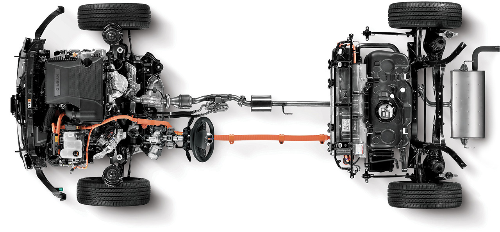
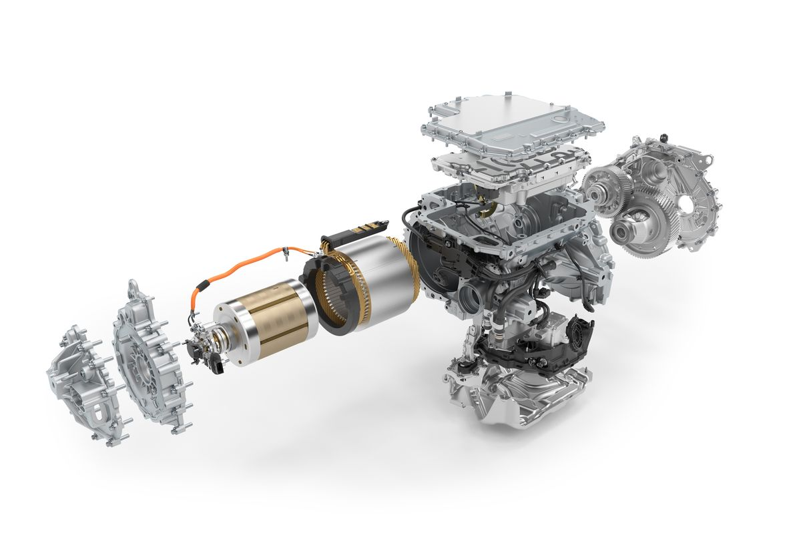

Types of EVs

Introduction: The electric two-wheeler set-up appears a lot more promising, in the form of research, financial acquisitions & investments, that makes the electric vehicle segment thrilling. Well, there is also the forward push by the government and the references of its think-tank, NITI Aayog. Why EV’s? The innovation of internal combustion engine is one of the best creations of humankind. The traditional vehicles with ICE provide a good performance but are the major cause for poor efficiency and environment pollution across the country. Decreasing fuel consumption and carbon emissions are the most important goal among the present-day plan of government across the globe. Thinking about the future of a country, an efficient and eco-friendly electric two-wheeler must be designed and manufactured. Impact of COVID-19 on Electric Two-wheeler market: Since the onset of pandemic, leading authorities-imposed lockdown restrictions and released a set of precautionary guidelines. Manufacturing units were temporarily shut down and disruption in supply chain was observed. Workers moved down to their native area which created shortage of workforce. The automotive industry including electric two wheeler market faced a setback and post COVID-19, electric two wheeler market is expected to pick up the pace eventually.
All existing two wheelers that are in the market cause pollution and their fuel cost is also increasing day by day. To compensate the changing fuel cost and curb down the high pollution levels, a good remedy is needed. Zero tailpipe emission technologies have long been held up as the last solution to transportation-related pollution problems. Electric two wheelers have been offered for several decades. Electric two wheelers, with their zero tailpipe emissions, can significantly improve urban air quality. The working starts with a battery connection. The battery consists of two terminals one is positive and another one is the negative terminal. The positive terminal is linked to the stator body of the motor on the other hand, the negative terminal is linked to the edge of the vehicle.
Hybrid EVs
A hybrid electric vehicle (HEV) is a type of hybrid vehicle that combines a conventional internal combustion engine (ICE) system with an electric propulsion system (hybrid vehicle drivetrain). The presence of the electric powertrain is intended to achieve either better fuel economy than a conventional vehicle or better performance. There is a variety of HEV types and the degree to which each function as an electric vehicle (EV) also varies. The most common form of HEV is the hybrid electric car, although hybrid electric trucks (pickups and tractors), buses, boats and aircraft also exist. There are different ways that a hybrid electric vehicle can combine the power from an electric motor and the internal combustion engine. The most common type is a parallel hybrid that connects the engine and the electric motor to the wheels through mechanical coupling. In this scenario, the electric motor and the engine can drive the wheels directly. Series hybrids only use the electric motor to drive the wheels and can often be referred to as extended-range electric vehicles (EREVs) or range-extended electric vehicles (REEVs). There are also series-parallel hybrids where the vehicle can be powered by the engine working alone, the electric motor on its own, or by both working together; this is designed so that the engine can run at its optimum range as often as possible.
Energy and Motors

Most large electric transport systems are powered by stationary sources of electricity that are directly connected to the vehicles through wires. Electric traction allows the use of regenerative braking, in which the motors are used as brakes and become generators that transform the motion of, usually, a train into electrical power that is then fed back into the lines. This system is particularly advantageous in mountainous operations, as descending vehicles can produce a large portion of the power required for those ascending. This regenerative system is only viable if the system is large enough to utilise the power generated by descending vehicles. In the systems above, motion is provided by a rotary electric motor. However, it is possible to "unroll" the motor to drive directly against a special matched track. These linear motors are used in maglev trains which float above the rails supported by magnetic levitation. This allows for almost no rolling resistance of the vehicle and no mechanical wear and tear of the train or track. In addition to the high-performance control systems needed, switching and curving of the tracks becomes difficult with linear motors, which to date has restricted their operations to high-speed point to point services.
